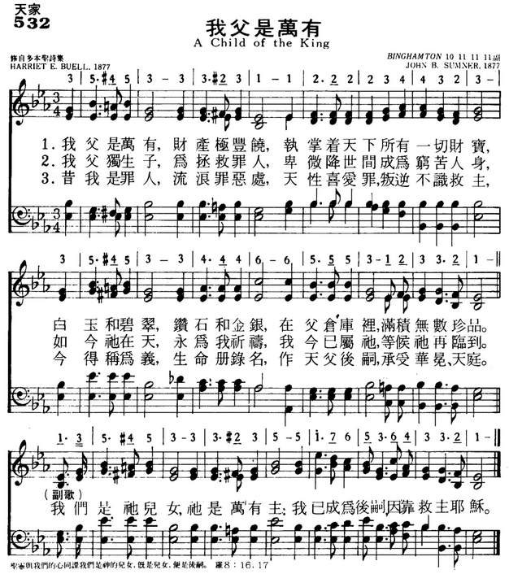

1282
A Child Of The King _Buell
532我父是万有
|
|
532我父是万有 |
|
1 My Father is rich in houses and land, Refrain: 2 My Father’s own Son, the Savior of men, 3 I once was an outcast stranger on earth, 4 A tent or a cottage, why should I care?
|
1.我父是万有，财产极丰饶，
执掌天下所有一切财宝，白玉和碧翠， 钻石和金银，在父仓库里，满积无数珍品。 我们是祂儿女，祂是万有主， 我已成为后嗣，因靠救主耶稣。 2.我父独生子为拯救罪人，卑微降世间成为穷苦人身， 如今祂在天，永为我祈祷，我今已属祂，等候祂再临到。。 3.昔我是罪人，流浪罪恶处，天性喜爱罪，叛逆不识救主， 今得称为义，生命册录名，作天父后嗣，承受华冕、天庭。 4.在世为客旅，乐居帐棚里，因主在天为我预备安宅， 虽远离亲族，我心仍歌唱，荣耀归于主，因主永远作王。。 |
|
https://www.mred365.cn/szxg/7535.html
 |
|
|
我父有许多房屋田产 My Father Is Rich http://ivy1heart.blogspot.com/2012/03/415-my-father-is-rich.html |
|

| Text: | A Child of the King |
| Author: | Harriet E. Buell |
| Tune: | BINGHAMTON |
| Composer: | John B. Sumner |
| Media: | MIDI file |
| Short Name: | Hattie E. Buell |
| Full Name: | Buell, Hattie E., 1834-1910 |
| Birth Year: | 1834 |
| Death Year: | 1910 |
Hattie (Katie) Eugenia Peck Buell USA 1834-1910. Born in Cazenovia, NY, she lived in Manlius, NY, until 1898, then moved to Washington, D.C., but maintained a summer residence at Thousand Island Park, NY. She married Willard Barnes Buell, and they had two sons. Her husband died in 1905. She wrote poems to the Northern Christian Advocate in Syracuse, NY.
John Perry
| Title: | [My Father is rich in houses and lands] (Sumner) |
| Composer: | John B. Sumner (1877) |
| Meter: | 11.11.11.11 with refrain |
| Incipit: | 35553 33331 12222 |
| Key: | E♭ Major |
| Copyright: | Public Domain |
| Short Name: | John B. Sumner |
| Full Name: | Sumner, John B., 1838-1913 |
| Birth Year: | 1838 |
| Death Year: | 1913 |
raise for the Lord #4
Words: Harriet E. Buell, 1877
Music: John B. Sumner, 1877
Harriet Eugenia Buell (1834-1910) published this poem in the Feb. 1st, 1877
issue of the Northern Christian Advocate, a prominent Methodist journal. In a
scene often repeated during the heyday of religious journalism, a songwriter
picked up the poem and set it to music, creating a collaboration after the fact.
Sumner (1838-1918)was a student of the great gospel songwriter Philip P. Bliss.(Cyberhymnal)
Stanza 1:
My Father is rich in houses and lands,
He holdeth the wealth of the world in His hands!
Of rubies and diamonds, of silver and gold,
His coffers are full, He has riches untold.
In Psalm 50:10 the Lord says, "For every beast of the forest is mine, the cattle
on a thousand hills." I recently watched the series Planet Earth with my
daughter, the nature lover; I was literally dumbfounded to see the wealth and
variety of life on this planet. When we add to that the treasures that lie
beneath our feet, in the deep places of the world, and the unknown reaches of
space, surely we can realize that the riches of God are far above anything we
can imagine--"Oh, the depth of the riches and wisdom and knowledge of God! How
unsearchable are his judgments and how inscrutable his ways!"(Romans 11:33)
Refrain:
I’m a child of the King,
A child of the King:
With Jesus my Savior,
I’m a child of the King.
Though we claim God as our Father, it is through Jesus that the relationship
became effectual. "But when the fullness of time had come, God sent forth his
Son, born of woman, born under the law, to redeem those who were under the law,
so that we might receive adoption as sons. And because you are sons, God has
sent the Spirit of his Son into our hearts, crying, 'Abba! Father!'"(Galatians
4:4-6) This new relationship lets us enjoy blessings now, and anticipate greater
blessings in the future: "The Spirit himself bears witness with our spirit that
we are children of God, and if children, then heirs--heirs of God and fellow
heirs with Christ, provided we suffer with him in order that we may also be
glorified with him."(Romans 8:16-17)
Stanza 2:
My Father’s own Son, the Savior of men,
Once wandered on earth as the poorest of them;
But now He is pleading our pardon on high,
That we may be His when He comes by and by.
Refrain
Physical riches on this earth, though, are not part of the promise. Jesus
himself warned that "foxes have holes, and birds of the air have nests, but the
Son of Man has nowhere to lay his head."(Luke 9:58) The followers of Jesus
cannot expect to fare better; Paul described the apostles as being considered
"like the scum of the world, the refuse of all things."(1 Corinthians 4:13) Yet
we know that our spiritual welfare is far more important, and it is a greater
blessing to know that Jesus is advocating for us before God's throne,(1st John
2:1) than to have all the money in the world.
Stanza 3:
I once was an outcast stranger on earth,
A sinner by choice, an alien by birth,
But I’ve been adopted, my name’s written down,
An heir to a mansion, a robe and a crown.
Refrain
Sin separates from God, and apart from God we have no hope. Speaking of the time
before God's revelation came to the Gentiles, Paul says in Ephesians 2:11-12,
"You Gentiles in the flesh... were at that time separated from Christ, alienated
from the commonwealth of Israel and strangers to the covenants of promise,
having no hope and without God in the world."
An awful thought indeed; we need to go one verse further. "But now in Christ
Jesus you who once were far off have been brought near by the blood of Christ."
At the end of the stanza Buell strikes once again the theme of adoption into a
parent-child relationship to God, as taught in Galatians 4 and Romans 8.
The second line of this stanza is somewhat troubling--can one be both "a sinner
by choice" and "an alien by birth"? The latter expression seems to reflect the
concept of original sin, while the former argues against it. Is there a way of
reconciling the two expressions? Or did Buell simply choose the latter phrase
because it rhymes with "earth" in the preceding line? One wonders what
theological vagaries are often committed in hymns for the sake of a good rhyme.
Stanza 4:
A tent or a cottage, why should I care?
They’re building a palace for me over there;
Though exiled from home, yet still may I sing:
All glory to God, I’m a child of the King.
Refrain
I have trouble with the first two lines of this stanza. (Once again, I'm sorry
if this is your favorite song; please refer to my apologies
in advance post.) It may tend toward a somewhat materialistic view of our
heavenly reward, focusing on the "riches untold" and "palace for me" instead of
the simple joy of being in the presence of God for eternity. Wayne Jackson
touches on this subject in his excellent "Study
of Heaven" in the Christian Courier.
The picture of the Christian as exile is a sound one, though; in Hebrews chapter
11, the "Faith Hall of Fame", verse 13 says that all those heroes of faith
"acknowledged that they were strangers and exiles on the earth". Peter also
called his readers "sojourners and exiles".(1 Peter 2:11) Like Abraham, the
great sojourner and exile of Genesis, we need to be "looking forward to the city
that has foundations, whose designer and builder is God."(Hebrews 11:10)
About the music: Sumner stands in the tradition of the first generation of
gospel song, before the Southern "quartet style" had emerged. This musical
setting is a good example of the typical simplicity of harmony in the early
gospel style--the entire first phrase, "My Father is rich in houses and lands",
is a prolonged Eb major chord, kept interesting by the accidentals ornamenting
the soprano and tenor lines. With a few exceptions for decorative purposes, this
song relies on the same three-chord foundation that made country music great.
References:
Cyberhymnal. A Child of the King. http://www.hymntime.com/tch/htm/c/h/childkin.htm.
http://drhamrick.blogspot.com/2009/01/child-of-king.html